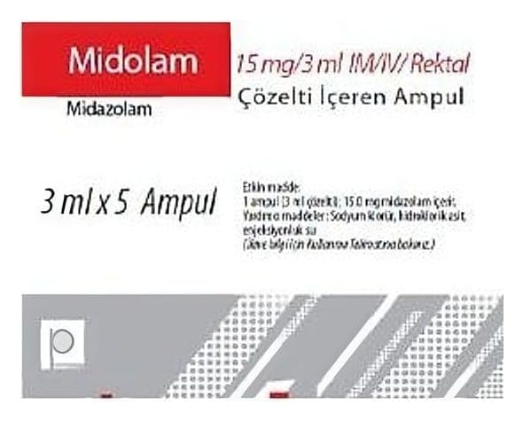

Midolam 15 mg/3 ml IM/IV/Rektal Çözelti İçeren Ampul, Ampul, 5 Adet

Ne için kullanılır
KT · Bölüm 1• MİDOLAM ampul, imidazobenzodiazepin grubu bir benzodiazepindir. Uyku başlatmak (sakinleşme, uyuşukluk veya uykulu durumu) ve heyecan, kas kasılmaları ve spazmları azaltmak için kullanılan hızlı etkili bir ilaçtır. İlaç damar içine enjeksiyon (intravenöz), damla ile enjeksiyon (infüzyon), kas içine enjeksiyon (intramüsküler) veya rektal uygulama yolu ile uygulanır. • MİDOLAM, etkin maddesi midazolam olan berrak ve renksiz steril bir çözeltidir. Her kutuda 15 mg/3 mL'lik 5 adet cam ampul bulunmaktadır. • Bu ilaç, tetkikler ve tedavi sırasında yetişkinlerde ve çocuklarda uyutma ve uyuşturma için kullanılır. Müdahale öncesinde verilen ilaç olarak, tedavi öncesinde hastaları yatıştırmak ve yoğun bakım ünitesindeki hastaları uyutmak için kullanılır. Midazolam tek başına veya anestezide kullanılan diğer ilaçlarla beraber kullanılabilir.